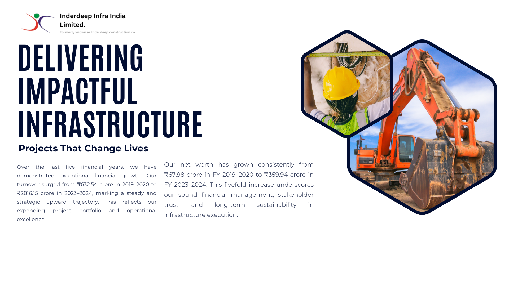
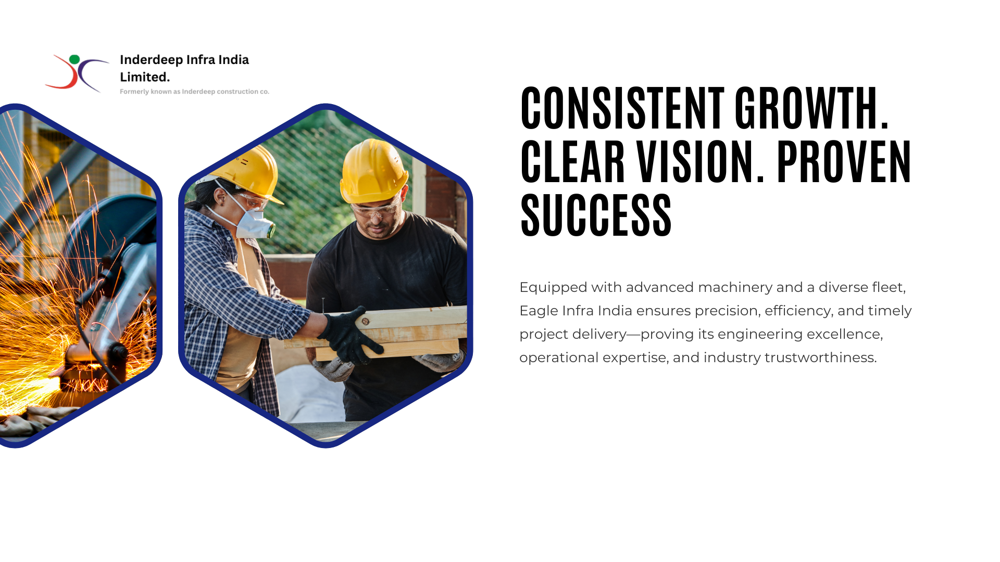

This road project interlinks various strategic towns in Yavatmal, including Shembal Pimpari, Gunj, Mahur, Darwha, and Manora. It boosts accessibility, facilitates smoother logistics, and supports rural-urban trade development across Maharashtra’s interior road networks.

With a budget of ₹545.61 Cr, this NH-6 expansion ensures seamless movement across key industrial belts. The work enhances freight efficiency and regional economic activity, serving as a critical artery between Amravati and Chikhli under national connectivity goals.

Western Coalfields Ltd. undertook a high-value ₹824.84 Cr project to remove overburden in the UKNI Deep OCM. The work boosts mining productivity and safety while supporting Maharashtra’s energy and industrial needs through improved coal excavation efficiency.
This ₹232.63 Cr overburden removal work at Inder-Kamptee supports uninterrupted coal supply. Operated by WCL, the project ensures optimized extraction from the Nagpur region, fostering energy security and economic growth in surrounding industrial corridors.

Executed under Maharashtra Jeevan Pradhikaran, this ₹195.21 Cr AMRUT mission project modernizes Yavatmals underground sewerage infrastructure. It ensures better waste management, reduces waterlogging risks, and enhances urban quality of life with long-term sanitation solutions.
The ₹372 Cr project by DMRC includes five elevated stations to improve last-mile connectivity in Mumbai’s suburban zones. It advances multimodal integration, reduces traffic congestion, and supports eco-friendly transit near SEEPZ, Powai Lake, and surrounding neighborhoods.
At ₹427.98 Cr, this turnkey project in Bhiwandi ensures streamlined underground sewerage for expanding urban areas. It includes operation & maintenance services, improving public health, stormwater control, and smart city alignment for the Bhiwandi-Nizampur municipal region.
 Upgradation Project.jpg)
With ₹302.5 Cr investment by MoRTH, this road rehabilitation between Parshuram Ghat and Arawali ensures better slope protection and smoother travel. It’s part of the strategic coastal highway upgrade for safer transport across Maharashtra’s western corridor.

This project connects Uddhat, Sansar, Walchandnagar, and surrounding areas under a unified water supply system. It ensures reliable water access to marginalized villages, empowering agriculture, hygiene, and community resilience in drought-prone zones of rural Pune.
Valued at ₹86.86 Cr, this project sources water from Birnal and Sanmadi tanks to benefit 29 Jat Taluka villages. Executed by MJP, it ensures sustainable water supply, especially in water-stressed zones, while aligning with Jal Jeevan Mission goals.
This ₹26.94 Cr project by Shirol Municipal Council modernizes local water distribution systems. It ensures equitable access, strengthens community well-being, and supports population growth in Kolhapur’s suburban landscape through planned water utility improvements.
MJP’s ₹152.47 Cr initiative covers Chakan’s industrial belt and Chimbali via two major water supply systems. It addresses rapid urbanization near Pune, ensuring clean water availability for residents and workers in fast-growing semi-urban areas.
With ₹325.93 Cr investment, this RUIDP project ensures clean drinking water and effective wastewater disposal. It enhances living standards and sustainability in Rajasthan’s secondary towns by combining water supply and sewage systems under a single urban development vision.
This ₹17.13 Cr initiative brings potable water to remote villages in Patur Taluka. It supports the Jal Jeevan Mission’s aim to provide tap water to every home and strengthens public health and hygiene at the grassroots level.
Under Maharashtra’s Suvarna Jayanti Abhiyan, this water project supports Manmad and surrounding Nandgaon villages. It ensures reliable supply infrastructure, essential for health and agricultural resilience in semi-urban Nashik zones.
.jpg)
This ₹94.78 Cr MJP Solapur project includes water, sewerage, stormwater drains, and roads for Ray Nagar housing. It transforms the urban ecosystem by delivering essential civic infrastructure to thousands of residents, contributing to Solapur’s planned city growth.